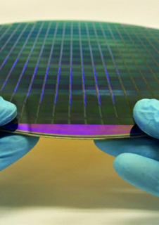
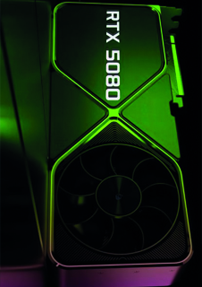
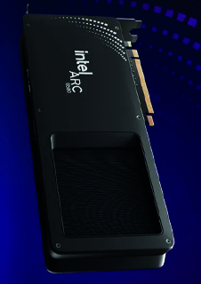
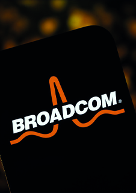
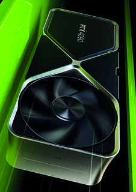
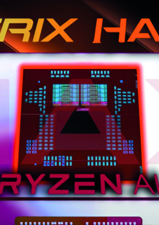

2024.12.03
인텔은 이사회가 새로운 CEO를 찾는 동안 임시 공동 최고경영자로 데이비드 진스너와 미셸(MJ) 존스턴 홀트하우스라는 두 명의 고위 간부를 임명했습니다. 진스너는 전무이사 겸 최고재무책임자이고, 홀트하우스는 회사의 클라이언트 컴퓨팅 그룹(CCG), 데이터 센터 및 AI 그룹(DCAI), 네트워크 및 에지 그룹(NEX)을 포함하는 그룹인 인텔 제품의 CEO라는 새로 만들어진 직위에 임명되었습니다. 인텔 이사회의 독립 의장인 프랭크 이어리는 전환 기간 동안 임시 임원 의장이 될 것입니다. 인텔 파운드리 리더십 구조는 변경되지 않습니다.
이사회는 검색 위원회를 구성했으며 Gelsinger의 영구 후임자를 찾기 위해 부지런하고 신속하게 노력할 것입니다.
Yeary는 "이사회를 대신하여 기술 리더십에서 오랜 경력을 쌓은 동안 Intel에 헌신하고 봉사한 Pat에게 감사드리고 싶습니다. Pat은 Intel에서 성장기를 보낸 후 2021년에 회사의 중요한 시기에 돌아왔습니다. 리더로서 Pat은 최첨단 반도체 제조에 투자하여 프로세스 제조를 시작하고 활성화하는 데 도움을 주었고 회사 전체에서 혁신을 추진하기 위해 끊임없이 노력했습니다."라고 말했습니다.
Yeary는 "제조 경쟁력을 회복하고 세계적 수준의 파운드리가 될 역량을 구축하는 데 상당한 진전을 이루었지만 회사에서 해야 할 일이 아직 많다는 것을 알고 있으며 투자자의 신뢰를 회복하기 위해 최선을 다하고 있습니다. 이사회로서 우리는 무엇보다도 모든 일의 중심에 제품 그룹을 두어야 한다는 것을 알고 있습니다. 고객은 우리에게 이것을 요구하며 우리는 이를 제공할 것입니다. MJ가 Intel Products의 CEO로 영구 승진하고 Intel의 임시 공동 CEO 역할을 맡음에 따라, 우리는 제품 그룹이 고객에게 제공하는 데 필요한 리소스를 확보할 수 있도록 하고 있습니다. 궁극적으로 프로세스 리더십으로 돌아가는 것이 제품 리더십의 핵심이며, 우리는 더 큰 효율성과 개선된 수익성을 추진하는 동시에 그 사명에 집중할 것입니다."
Yeary는 "Dave와 MJ의 리더십과 함께 우리는 우선순위에 대해 시급하게 조치를 취할 것입니다. 제품 포트폴리오를 단순화하고 강화하고 제조 및 주조 역량을 발전시키는 동시에 운영 비용과 자본을 최적화합니다. 우리는 더 가볍고 단순하며 민첩한 Intel을 만들기 위해 노력하고 있습니다." 라고 결론지었습니다.
Gelsinger는 "Intel을 이끄는 것은 제 인생에서 가장 영광스러운 일이었습니다. 이 사람들은 업계에서 가장 뛰어나고 가장 뛰어난 사람들 중 하나이며, 저는 모든 사람을 동료라고 부를 수 있어 영광입니다. 오늘은 물론 달콤하면서도 씁쓸한 날입니다. 이 회사는 제 직장 생활의 대부분을 보낸 제 삶이었습니다. 우리가 함께 이룬 모든 것을 자랑스럽게 돌아볼 수 있습니다. 올해는 우리 모두에게 도전적인 한 해였습니다. 인텔을 현재 시장 역학에 맞게 배치하기 위해 어렵지만 필요한 결정을 내렸기 때문입니다. 저는 인텔 가족의 일원으로 함께 일한 전 세계의 많은 동료들에게 영원히 감사드립니다."

2024.10.20
Intel의 Core Ultra 9 285K 출시 전 벤치마크는 계속해서 나타나고 있으며 최신 벤치마크는 이전 플래그십보다 와트당 성능이 강력함을 보여줍니다.
250W의 인텔 Core Ultra 9 285K CPU는 익스트림 모드의 Core i9-14900KS보다 빠르고 전력 소모가 적습니다.
Intel의 Core Ultra 9 285K는 Arrow Lake "Core Ultra Series 2" 라인업의 플래그십이 될 예정이며 이 칩은 이제 무제한 250W 전력 프로필에서 벤치마크되었으며 이전 세대에 비해 효율성이 향상되고 멀티스레딩 성능이 크게 향상되었습니다.
Intel Core Ultra 9 285K CPU의 새로 유출된 벤치마크는 소셜 플랫폼인 Facebook의 Le Duy Thanh에서 나왔습니다. CPU는 무제한 250W 전력 프로필에서 실행 중이었고 Cinebench R23의 멀티스레드 테스트 내에서 실행 중이라고 명시되어 있습니다.
CPU는 최대 온도 76도, 평균 온도 59도에서 실행되는 것으로 보이는데, 이는 Core i9-14900K와 Core i9-14900KS가 Performance 및 Extreme 전원 계획을 사용하여 실행하는 100C+ 온도보다 훨씬 낮습니다. 어떤 냉각 장치가 사용되었는지 또는 클록이 수정되었는지는 알 수 없지만 I_Leak_VN에 따르면 변경된 사항은 클록 속도 조정 외의 몇 가지 BIOS 조정과 함께 전원 프로필뿐입니다.
성능 면에서 Intel Core Ultra 9 285K CPU는 45,563점을 기록했는데, 이는 최대 253W 이상으로 올라가는 "Performance" 모드에서 실행되는 Core i9-14900K보다 10% 빠르고, Extreme 모드에서 300W 이상의 전력을 기록하는 Core i9-14900KS보다 6% 더 빠릅니다. AMD Ryzen 9 9950X는 253W 전력 모드에서 동일한 벤치마크에서 46,904점을 기록하며 선두를 달렸습니다. 200W에서도 9950X는 매우 경쟁력이 있습니다.
이 점수가 정말 인상적인 이유는 Intel Core Ultra 9 285K CPU가 Core i9-14900K, 14900KS 및 AMD Ryzen 9 9950X의 32개 스레드에 비해 24개 스레드만 제공한다는 사실입니다. i9-14900K 및 14900KS는 또한 훨씬 더 높은 클록 속도에서 실행되며 14900K는 최대 6.0GHz에서 작동하는 반면 14900KS는 285K의 5.7GHz 피크 클록에 비해 6.2GHz에서 작동합니다. Raptor Lake CPU도 매우 뜨거워지고 많은 전력을 소모하며, 이 두 가지 요소는 Arrow Lake CPU에 맞게 수정 및 조정되어 전력 사용량을 최대 188W까지 줄이고 최대 17도 더 낮은 온도를 제공합니다.
Intel Core Ultra 9 285K CPU는 10월 24일에 출시될 예정이며 이미 예약 주문이 시작되었습니다. 이 CPU는 초고속 메모리 지원 및 기타 I/O 및 전력 공급 업그레이드를 제공하는 다양한 Z890 마더보드와 함께 Intel Core Ultra 7 265K 및 Intel Core Ultra 5 245K와 함께 출시될 예정입니다.

2024.12.06
세계 3분기 파운드리 시장에서 1위 TSMC와 2위 삼성전자간 점유율 격차가 더 벌어졌다. TSMC는 65%에 육박하는 점유율을 차지한 반면 삼성전자는 처음으로 한 자릿 수로 떨어졌다. 또한 삼성전자는 상위 10대 업체 중에서 유일하게 매출이 감소하면서 파운드리 사업에 대한 우려가 커졌다.
6일 시장조사업체 트렌드포스에 따르면 3분기 파운드리 시장에서 TSMC는 64.9% 점유율로 전분기(62.3%) 보다 2.6%P(포인트) 늘었다. TSMC 3분기 매출은 235억2천700만 달러(33조3천200억원)으로 전분기보다 13% 증가했다.
삼성전자 3분기 매출은 33억5700만 달러(4조7500억원)로 전분기 보다 12.4% 줄었다. 이로써 삼성전자 3분기 점유율은 9.3%로 전분기(11.5%) 보다 2.2%p 감소했다.
TSMC와 삼성전자간 점유율 격차는 55.6%P에 달한다. 양사의 점유율은 매분기 격차가 더 벌어지고 있는 상황이다. 지난해 3분기 45.5%P에서 4분기에 49.9%P로 벌어졌고, 올해 1분기 50.7%P, 2분기 50.8%P 격차를 보였다.
트렌드포스는 “스마트폰 관련 주문 확보 등 일부 성과에도 불구하고, 주요 첨단 공정 고객사의 주문 주기가 종료에 가까워지면서 신규 매출 창출에 제한이 있었다”라며 “또한, 성숙 공정에서 중국 업체들과 경쟁이 심화되면서 가격 인하 압박을 받았다”고 분석했다.
그 밖에 파운드리 시장에서 3위 SMIC(6%), 4위 UMC(5.2%), 5위 글로벌파운드리(4.8%), 6위 화홍그룹(2.2%) 순으로 차지했다.
3분기 파운드리 상위 10개 기업의 매출은 전분기 보다 9.1% 증가하며 349억 달러를 기록했다. 이는 고가의 3나노 공정이 매출 증가에 기여하면서 팬데믹 기간에 세운 기록을 깼다.
트렌드포스는 4분기에도 3, 4, 5나노 공정이 주요 매출 성장을 이끌 것으로 내다봤다. AI와 플래그십 스마트폰, PC 프로세서 수요가 연말까지 지속되고, CoWoS 고급 패키징이 계속해서 공급 부족에 직면할 것으로 예상했다.
반면 28나노 이상의 성숙 공정은 수요가 감소세다. TV SoC, LDDI, 패널 관련 PMIC 등의 재고가 늘어나면서 내년 1분기 수요가 더욱 악화될 가능성이 높다고 전망했다.
2024.12.10
TSMC 창립자 모리스 창은 월요일 대만에서 열린 자서전 홍보 행사에서, 인텔이 CEO도 명확한 전략도 없는 상태에서 "매우 어려운" 도전에 직면해 있다고 언급했다고 여러 언론이 보도했습니다.
창은 최근 사임한 인텔 CEO 팻 겔싱어에 대해 "왜 팻이 사임했는지 모르겠다. 그의 전략이 나빴는지 아니면 실행을 제대로 하지 못했는지 모르겠다"라며, "겔싱어는 AI보다 파운드리가 되는 것에 더 집중한 것처럼 보였다. 물론 이제 보면 그는 AI에 집중했어야 했다"라고 말했습니다.
올해 엔비디아는 경쟁사들보다 AI 붐에 집중한 덕분에 가장 큰 재정적 이익을 얻었습니다. 엔비디아의 주가는 올해 195% 이상 급등하며 시가총액 기준 애플과 세계 1위 자리를 놓고 경쟁 중입니다. 엔비디아는 H100과 H200 GPU를 판매하며 AI 데이터 센터 시장을 주도하고, 자체 AI 모델, AI 노트북, 그리고 차세대 AI GPU인 Blackwell을 개발하며 AI 열풍을 타고 성장하고 있습니다.
반면, 인텔은 시가총액 기준 상위 100대 기업 목록에조차 포함되지 않았으며, AMD는 글로벌 시가총액 기준 50위를 기록하고 있습니다.
창은 이날 행사에서 인텔이 새로운 CEO뿐만 아니라 앞으로 나아갈 전략도 결여된 상태라고 주장하며, "이 둘을 모두 찾는 것은 매우 어렵다"라고 말했습니다. 또한 인텔이 그에게 자문을 요청하더라도 "거절할 것"이라고 덧붙였습니다.
한편, 창은 지난 10월 겔싱어가 "대만 공장에 모든 걸 의존해서는 안 된다"라며 TSMC의 대만 기반과 지정학적 리스크를 언급한 발언에 대해 "다소 무례하다"고 비판한 바 있습니다. 이 발언 이후 TSMC는 인텔에 제공하던 40% 웨이퍼 할인을 취소한 것으로 전해졌습니다.
현재 TSMC는 미국 정부로부터 116억 달러를 지원받아 애리조나에 3개의 반도체 제조 공장을 건설 중이며, 첫 번째 공장은 2025년 초 생산을 시작할 예정이고 나머지 두 곳은 2030년까지 가동될 계획입니다.
2024.12.04
팻 겔싱어의 은퇴 후 인텔의 판도를 뒤집는 도전을 누가 할까? 최신 블룸버그 보고서 에 따르면 , 어려움을 겪고 있는 이 거대 기업은 새로운 CEO를 찾는 데 외부 후보를 우선시하고 있다.
보도에서 인용한 소식통에 따르면 잠재적인 경쟁자로는 마벨 CEO인 맷 머피와 케이던스의 전 CEO이자 인텔 이사회 전 멤버인 립부 탄 등이 있다고 합니다.
전 TSMC 의장: 합리적인 후보
이전에 인텔이 TSMC 전 회장인 마크 류에게 이 직책을 제안했다는 소문이 돌았습니다. 블룸버그의 분석에 따르면 류는 인텔에서 경력을 시작했고 2024년 초에 TSMC에서 은퇴했으며 인텔이 영입할 수 있는 후보일 수 있습니다. 블룸버그는 일반적인 미국 CEO보다 나이가 많지만(류는 올해 70세가 됩니다) 그의 경험은 그를 매력적인 선택으로 만들 수 있다고 덧붙였습니다.
블룸버그에 따르면, 인텔은 후보자를 파악하고 평가하는 데 도움을 주기 위해 임원 헤드헌팅 회사인 스펜서 스튜어트와 계약을 맺었는데, 이는 내부 승진을 선호하는 인텔의 전통적 방식과 크게 다르다.
겔싱어의 성급한 사임은 그에게 인텔의 주목할 만한 전통 중 하나인 임원 교육 프로그램을 되살릴 기회를 주지 않았다고 보고서는 밝혔다. 이 프로그램은 한때 광범위한 산업의 리더를 배출했다. 현재 최고재무책임자 데이비드 진스너와 전무이사 미셸 존스턴 홀트하우스가 임시 공동 CEO로 나서고 있다.
그러나 블룸버그에 따르면 반도체 산업의 고도로 기술적인 특성을 고려할 때 인텔은 CFO Zinsner를 영구 CEO로 임명하는 데 주저할 수 있습니다. 전 CFO Bob Swan이 2019년부터 2021년까지 인텔의 임시 리더로 재임하는 동안 그의 배경은 기술적 측면에 대한 그의 이해가 전략적 결정을 안내하기에 충분한지에 대한 우려를 불러일으켰다고 보고서는 지적합니다.
두 개의 채용 풀: 전직 임원, 대형 고객
블룸버그에 따르면, 1968년 창립 이래로 인텔의 거의 모든 리더는 회사 내부에서 승진했습니다. 스완은 유일한 예외였는데, 인텔 직원과의 관계로 인해 브라이언 크르자니치가 이사회에서 해고된 후 임시 해결책으로 임명되었습니다.
블룸버그에 따르면, 내부자-외부자 관계의 균형을 맞추는 한 가지 방법은 최근 몇 년 동안의 경영진 변화 중에 회사를 떠난 전 인텔 임원을 다시 영입하는 것일 수 있습니다. 여기에는 올해 회사 이사회에 합류한 전 인텔 CFO 겸 영업 임원인 스테이시 스미스와 2022년에 아날로그 디바이스로 옮기기 전까지 인텔의 개인용 컴퓨터 사업부를 이끌었던 그레고리 브라이언트가 포함됩니다.
또 다른 잠재적인 인재 소스는 인텔의 가장 큰 고객일 것입니다. 블룸버그에 따르면, 그들 중 많은 사람들이 다양한 수준의 성공을 거두며 자체 칩 개발 이니셔티브를 시작했습니다. 이 보고서는 Apple의 매우 성공적인 내부 칩 부문의 수석 부사장인 Johny Srouji를 핵심 인물로 지목합니다.

2024.12.10
NVIDIA의 GeForce RTX 5080 "Blackwell" GPU는 매니아 등급 옵션이며 RTX 4080의 후속 제품입니다.
NVIDIA GeForce RTX 5080 GPU: 블랙웰이 열성적인 게이머를 위해 설계했습니다!
NVIDIA GeForce RTX 5080은 Blackwell 아키텍처를 기반으로 하는 이 회사의 출시 예정 GPU입니다. RTX 5080은 RTX 50 라인업에서 RTX 5090에 이어 두 번째로 빠른 GPU로 알려졌으며, 현재 세대 RTX 4080 및 RTX 4080 SUPER GPU의 후속 제품입니다.
NVIDIA의 차기 GeForce RTX 50 시리즈는 Blackwell 아키텍처를 기반으로 하며 RTX 5080은 플래그십 RTX 5090 GPU에 이어 시리즈에서 두 번째로 빠를 것입니다. NVIDIA의 Blackwell 아키텍처는 데이터 센터와 게임 GPU 모두에 사용됩니다. Blackwell GPU는 특히 N5B인 새로운 맞춤형 5nm 프로세스 노드를 활용할 것입니다.
NVIDIA GeForce RTX 5080 GPU는 게임과 일반 그래픽 작업 부하에서 눈에 띄는 성능 우위를 제공함으로써 Ada 기반 GeForce RTX 4080 GPU를 대체할 것으로 예상됩니다. NVIDIA는 여러 세대에 걸쳐 80등급 카드를 계속 사용해 왔으며 Turing 기반 RTX 30 시리즈 GPU가 출시될 때까지 전체 라인업에서 가장 빠른 GPU였으며 그 이후로 90등급 GPU가 라인업에서 가장 빠릅니다.
현재 기본 GPU 구성을 제외하고는 다이에 대한 자세한 정보가 없지만 GPU에 대한 일부 유출된 사양이 있습니다. GPU 다이에 대한 정보가 있으면 이 섹션을 업데이트하겠지만 지금까지는 NVIDIA가 80등급 카드에 이전 세대에서 사용된 것과 동일한 계층의 GPU 다이를 후속으로 내놓을 것으로 예상됩니다.
NVIDIA GeForce RTX 5080은 10,752개의 Cuda 코어와 84개의 SM을 탑재할 것으로 알려졌는데, 이는 RTX 4080에 탑재된 9,728개의 Cuda 코어와 76개의 SM에 비해 약 10.5% 증가한 수치입니다. NVIDIA는 RTX 5080에서 동일한 메모리 크기를 유지할 것으로 예상되지만, RTX 4080의 GDDR6X에 비해 새로운 GDDR7 메모리 유형을 탑재할 것으로 예상됩니다.
NVIDIA GeForce RTX 5080 GPU는 256비트 버스에서 16GB의 VRAM을 제공하며 최대 32Gbps의 가장 빠른 GDDR7 메모리 속도를 제공할 것으로 예상되며 , 총 메모리 대역폭은 약 1TB/s입니다. 1024GB/s 대역폭은 1007GB/s 대역폭을 제공하는 RTX 4090 GPU보다 앞서게 됩니다.
메모리 속도는 RTX 5090이 가져올 것보다 훨씬 더 빠르고 RTX 4080이 제공하는 것보다 약 43% 더 높은 대역폭입니다. 최근 5080이 24GB 변형을 제공하는 또 다른 에디션을 제공할 것이라는 소문도 있었는데 , 이는 모듈당 3GB를 의미합니다. 그러나 출시 변형은 16GB VRAM과 함께 제공됩니다.
즉, NVIDIA GeForce RTX 5080은 RTX 4080보다 더 높은 TBP(400W)를 가져올 것입니다. 이는 RTX 4080(320W)보다 80W 더 높습니다. TBP는 보드가 활용할 수 있는 최대 전력일 뿐이며 실제 전력 소비량과 비교해서는 안 됩니다. RTX 40 GPU를 볼 때 실제 와트 정격보다 낮았습니다. RTX 5080은 커넥터가 최대 600W를 제공할 수 있으므로 전력 요구 사항에 대해 단일 12V-2x6 커넥터를 제공합니다.
NVIDIA GeForce RTX 5080은 RTX 4080을 대체할 예정이며, 최근 소문에 따르면 RTX 4090보다 10% 더 나은 성능을 제공할 것으로 보입니다. RTX 5080은 사양을 볼 때 RTX 4090이 5080보다 앞서는 것처럼 보이기 때문에 RTX 4090보다 레이 트레이싱에서만 더 나을 수 있습니다.
그럼에도 불구하고, 여러 이론이 두 시나리오를 모두 증명할 수 있으며, RTX 5080이 RTX 4090보다 우수한지 여부를 말하기 위해서는 구체적인 데이터가 필요합니다. RTX 4080과 비교했을 때, 5080은 사양이 업그레이드되어 훨씬 더 빠를 것이 거의 확실하며, 이는 대부분 타이틀에서 4K 해상도에서 60fps 이상을 볼 수 있다는 것을 의미합니다. 또한 RTX 4080은 RTX 3090보다 20~25% 더 빠르며, RTX 5080에서도 비슷하거나 더 나은 성과를 기대할 수 있다는 점도 기억해야 합니다.
NVIDIA GeForce RTX 4080 및 4080 SUPER는 래스터화와 레이 트레이싱 모두에서 최신 타이틀에서 견고한 성능을 제공해 왔으며 RTX 5080은 더 높은 메모리 대역폭을 제공하므로 특히 4K에서 더 높은 해상도에서 그 우위를 계속 유지할 것으로 예상됩니다.

2024.12.10
Arc B580 ( VideoCardz를 통해 )은 OpenCL 및 Vulkan API에서 Geekbench에서 테스트되었으며, 이전 모델인 A580 보다 30% 이상 앞섰습니다. 이 테스트는 12월 12일에 해제될 예정인 금지령 전에 리뷰어가 수행한 것으로 보입니다. 겉보기에 진짜 같지만, 합성 벤치마크는 실제 성능에 완벽하지 않기 때문에 이 유출은 믿지 마십시오.
테스트 벤치에는 인텔의 플래그십 Core Ultra 9 285K, 48GB의 빠른 DDR5-8400 메모리, Gigabyte의 Z890 AORUS PRO ICE 마더보드가 있습니다. 300달러 미만 시장에서 강력한 경쟁자인 인텔은 Arc B580을 RTX 4060 보다 10% 더 빠르 면서도 더 저렴하다고 선전합니다. 금수 조치가 해제되면 인텔의 퍼스트파티 성능 지표를 검토에서 확인하겠습니다. 그러나 드라이버가 인텔이 주장하는 만큼 안정적이라면 가치 제안이 강력하지 않다고 말하는 것은 불공평할 것입니다.
벤치마크로 넘어가서, 가장 관련성 있는 GPU에 대한 공개적으로 사용 가능한 OpenCL 및 Vulkan 점수를 정렬하여 Arc B580과 비교했습니다. 서로 다른 아키텍처에서 다양한 성능을 보이는 두 가지 다른 API를 살펴보고 있기 때문에 성능이 엇갈립니다. 직접적인 세대 간 비교를 위해, B580은 Vulkan에서 A580보다 약 30% 더 빠르고, OpenCL로 전환하면 약 10%로 떨어집니다.
흥미롭게도 Arc B580은 OpenCL에서 RTX 4060에 졌지만 Vulkan에서는 6%의 근소한 우위를 차지하며 자신을 만회했습니다. AMD의 RX 7600은 두 API 모두에서 뒤처졌는데, 이는 위에서 언급한 아키텍처 변형 때문일 수 있습니다. 그래도 B580은 RX 6700 XT 보다 뒤처졌지만 , 후자는 가격이 더 비싼 3년 된 GPU입니다.
합성 숫자를 실제 FPS로 변환하는 마법의 공식은 없습니다. 마찬가지로, Lunar Lake에서 볼 수 있는 Battlemage는 종이상의 사양과 합성 테스트에 따르면 Alchemist(Meteor Lake)보다 느리지만, 광범위한 테스트 에 따르면 게임에서는 실제로 42% 더 빠릅니다.(720p에서)
드라이버가 버틸 수 있다면 인텔은 한때 잊혔던 저가 GPU 시장을 다시 불태울 수 있습니다. 우리는 그들이 그럴 것이라고 기대합니다. Battlemage는 비밀스러운 와일드카드를 소매에 숨겨두고 있습니다. 하드웨어 지원 XeSS 프레임 생성은 Nvidia의 DLSS FG와 경쟁합니다. 새로운 XeSS 2 업스케일링 및 보간 기술 제품군을 통해 인텔은 현재 AMD보다 우위를 점하고 있지만, AI 지원 FSR을 사용한다는 소문이 있는 RDNA 4로 바뀔 수 있습니다 .

2024.12.10
새로운 분석가 노트에서 Bank of America는 AMD의 주가를 매수에서 중립으로 하향 조정하여 회사의 주가 목표를 이전 180달러에서 155달러로 낮췄습니다. BofA의 조정은 AI 칩 시장의 확대로 인해 Marvel과 Broadcom의 제품에 대한 수요가 증가하고 AMD의 시장 점유율 확대 능력이 제한될 것이라는 믿음에 따른 것입니다. NVIDIA의 GPU에 대한 과도한 수요와 높은 가격이 결합되어 대형 기술 회사는 맞춤형 AI 칩을 개발하거나 AI 워크로드를 계산하는 데 필요한 인프라 구축에서 뒤처지지 않기를 원하기 때문에 공급원을 다각화하려고 합니다.
AMD의 칩 설계 산업에서의 입지는 두 주요 경쟁사가 두 개의 다른 산업에 있는 독특한 비즈니스 모델을 제공합니다. x86 프로세서와 관련하여 AMD는 Intel 제품에 대한 유일한 대규모 대안이라는 이점도 있습니다. AMD의 주가 목표를 180달러에서 155달러로 낮추고 등급을 매수에서 중립으로 낮춘 최신 메모에서 BofA는 이 사실을 알고 있습니다.
이 은행은 AMD가 인텔의 약점을 활용하는 능력과 AI 시장을 타겟팅하는 능력을 합치면 연간 15~20%의 매출을 늘릴 수 있을 것이라고 공유합니다. 그러나 이것은 BofA의 보도에서 유일한 낙관적인 '노트'입니다. 이 은행은 NVIDIA에서 벗어나 Marvell과 Broadcom과 같은 회사로 AI GPU 시장이 확대됨에 따라 AMD에 대한 경쟁이 발생할 것이라고 덧붙입니다.
Intel과 AMD가 주도하는 x86 CPU 시장과 달리 GPU와 특히 AI 가속기 시장은 더 광범위합니다. Marvell과 Broadcom과 같은 회사가 이 빠르게 성장하는 부문에서 핵심 업체로 부상하고 있습니다.
BofA에 따르면, AI 가속기 시장에서 NVIDIA의 우위와 클라우드 공급업체가 Marvell과 Broadcom의 맞춤형 칩을 찾고 있다는 사실이 결합되어 AMD가 AI 산업에서 운영할 수 있는 능력이 제한됩니다. 특히 Marvell은 맞춤형 AI 프로세서를 공격적으로 추진해 왔습니다.
회사의 2분기 실적 발표에서 경영진은 " 올해 초에 발표한 새로운 Tier 1 AI 고객과의 프로젝트도 주요 이정표에 잘 따라가고 있다 "고 공유했습니다. Marvell은 회계연도 3분기에 회사가 예상하는 10대 후반 데이터 센터 시장 성장에 대해 " 이 성장에 가장 큰 기여를 할 것은 3분기에 의미 있게 확대되기 시작하는 AI 맞춤형 실리콘 프로그램 "이라고 덧붙였습니다.
마찬가지로, 미디어 보도에 따르면 Broadcom은 OpenAI와 협력하여 후자가 NVIDIA 제품에 대한 의존도를 줄이기 위해 맞춤형 AI GPU를 개발할 수 있도록 하고 있다고 주장했습니다. AWS 공급업체 Amazon은 올해 초 맞춤형 AI 칩을 발표하면서 헤드라인을 장식했고, Google은 이미 TPU를 AI 컴퓨팅 목적으로 사용하고 있습니다.
BofA는 AMD의 클라이언트 PC 판매가 2024년 상반기에 40%의 절반으로 성장했지만, 이러한 모멘텀이 2025년 상반기에 상관관계로 이어질 수 있다고 덧붙였습니다. 2024년 상반기에 AMD의 클라이언트 사업은 28억 6천만 달러의 매출을 기록했는데, 이는 2023년 상반기 수치보다 65% 성장한 것입니다. BofA에 따르면, PC 시장이 조정되면 내년에 AMD가 둔화될 수 있습니다. 그 결과, 이 은행은 회사의 2026년 주가수익비율을 28배로 낮추고 주가 목표를 155달러로 책정했습니다.

2024.12.09
NVIDIA GeForce RTX 4090 GPU는 거의 2년 전에 기존 RTX 40 "Ada" 라인업의 플래그십 제품으로 출시되었습니다. 이 그래픽 카드는 RTX 3090/3090 Ti에 비해 성능이 크게 향상되었으며, 단종 시점에 적절한 가격 인하와 할인을 기대했지만, 이 특정 그래픽 카드의 단종으로 인해 가격이 대폭 인상된 것으로 보입니다.
Newegg부터 NVIDIA GeForce RTX 4090은 ASUS의 TUF Gaming이라는 한 모델로 한정적으로 판매되며, 가격은 2,700달러이고 나머지 모델은 3,500달러 이상(3,599~3,699달러)에 판매됩니다. Amazon에서도 마찬가지인데, 대부분 모델이 품절이고 나머지는 2,500달러에 가까운 가격에 판매됩니다.
B&H Photo는 NVIDIA GeForce RTX 4090의 모든 모델을 단종으로 표시하는 유일한 리테일러입니다. BestBuy도 같은 모델을 "품절"로 표시하는데, 이는 RTX 4090의 마지막 남은 모델이 공급/생산 감소로 인해 단종되었으며, 일부 특정 리테일러만이 여전히 재고를 보유하고 가격이 인상된 상태로 판매되고 있음을 확인합니다.
미국 시장 외에도 EU와 영국 지역에서도 GeForce RTX 4090에 대한 비슷한 가격 인상과 재고 부족 시나리오가 발생하고 있습니다. 이제 이전 세대 카드가 차세대 출시 전에 제한적으로 공급될 것이라는 것은 놀라운 일이 아니지만, 이는 일반적으로 재고를 이동하기 위해 가격이 낮아지는 것과 함께 제공됩니다.
플래그십 모델인 RTX 4090은 이미 올해 하반기부터 소량 생산되어 왔으며, 10~11월에 생산이 중단되면서 결국 리테일 부문에서 퇴출될 예정이었습니다. 이제 공급이 소진됨에 따라 AIB와 리테일러들은 차세대 플래그십인 GeForce RTX 5090에 집중할 것으로 보이며, 블랙웰 라인업에 합류하려는 사용자들로부터 리퍼 및 중고 제품이 시장에 쏟아져 나올 것으로 보입니다.

2024.12.10
최근 긱벤치에 AMD의 신제품 벤치마크 정보가 등록되었습니다. 등록된 프로세서의 이름은 AMD Ryzen AI MAX+ PRO 395. 코드명, 스트릭스 헤일로(Strix Halo)입니다. 스트릭스 헤일로는 거대한 패키지 안에 강력한 CPU와 강력한 내장 그래픽으로 게이밍 노트북을 타겟으로 하는 제품으로 알려져 있습니다.
과거 루머로 나온 스트릭스 헤일로의 도식도입니다. 내장 그래픽이 RDNA 3.5 기반 40 CU를 탑재하여 RTX 4070 노트북 수준의 성능을 발휘할 것으로 알려졌습니다.
긱벤치 등록에 따르면 AMD Ryzen AI MAX+ PRO 395 프로세서는 16코어 CPU를 탑재했습니다. L3 캐시는 32MB x2의 총 64MB 구조로, 지금의 라이젠 9000 시리즈와 동일하게 8코어 CCD가 2개 탑재된 것으로 추론됩니다. 루머에 따르면 LPDDR5X 메모리 탑재로 이 메모리가 시스템 메모리임과 동시에 GPU의 VRAM을 담당할 것으로 알려졌는데, 메모리는 총 64GB를 탑재했습니다.
핵심인 내장 그래픽은 Radeon 8060S가 탑재되었습니다. 내장 그래픽 모델명은 식별되었지만, 구체적인 GPU의 스펙은 알 수 없었습니다. Vulkan 벤치마크 점수는 67,000점 수준으로, 이는 RTX 2060 수준입니다. 아직 최종 제품이 아니기 때문에 점수는 낮게 나온 것으로 보입니다.
AMD 스트릭스 헤일로는 이번에 발견된 AMD Ryzen AI MAX+ PRO 395 모델 외에도 12코어/8코어 CPU를 탑재한 모델을 준비중인 것으로 알려졌습니다.